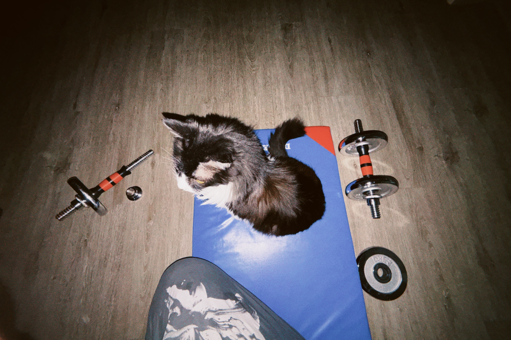
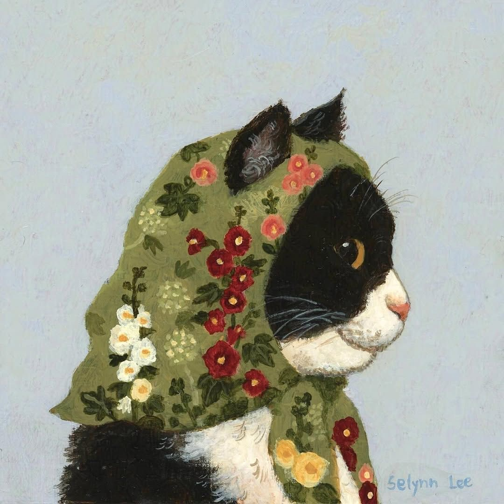
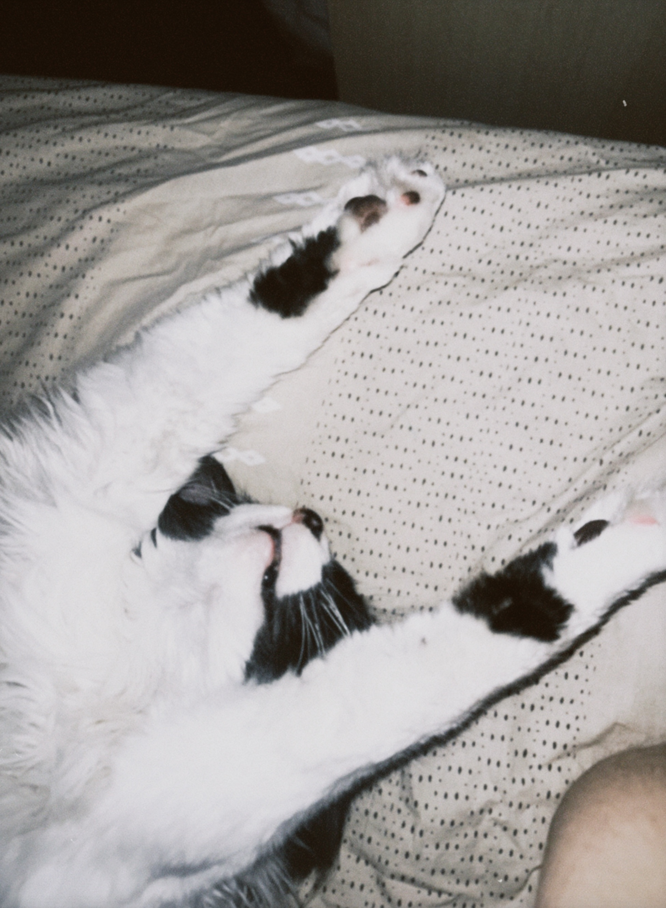
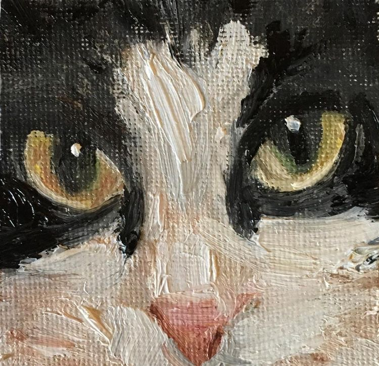
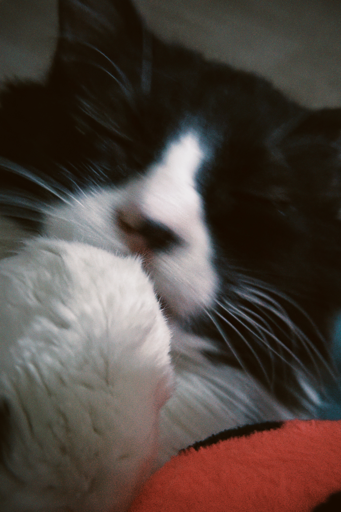
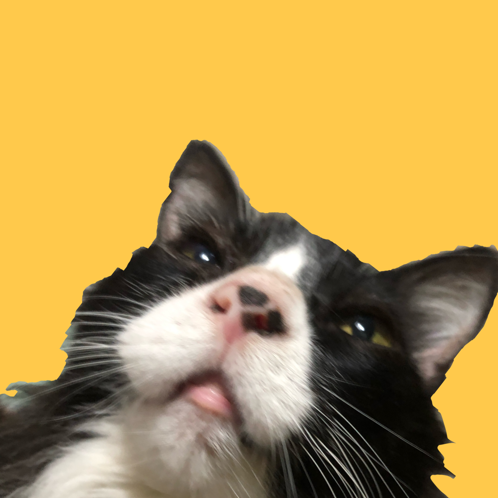
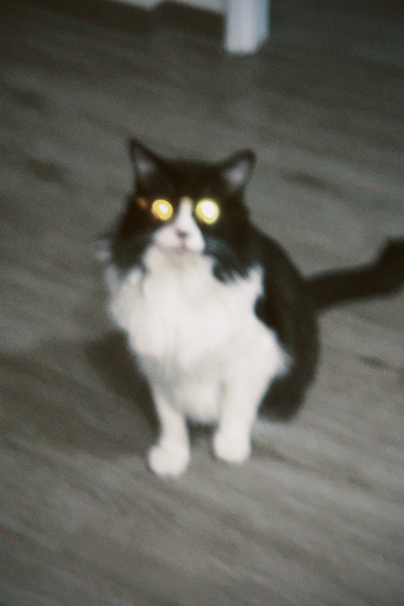

Meet Pompón
Welcome to Pompón's website! Here you can learn about his story, personality, favorite activities, favorite meals, and see some of his cutest moments.
He will be your fitness inspiration! 🐾





Pompón
Pompón is a loving, curious, and playful cat. Even though he is missing one paw, he has adapted amazingly and continues to enjoy every day.

He loves spending time with his family, watching birds through the window, taking long naps, and exploring every corner of the house.
His story reminds us that challenges should never stop us from living happily.
